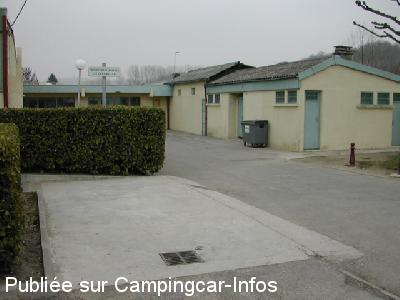

ASN = Aire de services avec stationnement nuit possible de :
SAINT DONAT SUR L'HERBASSE
(N° 467)
Accès/adresse :
Rue du 19 Mars 1962
26260 SAINT DONAT SUR L'HERBASSE
26260 SAINT DONAT SUR L'HERBASSE
Latitude : (Nord) 45.11837° Décimaux ou 45° 7′ 6′′
Longitude : (Est) 4.9831° Décimaux ou 4° 58′ 59′′
Tarif : Gratuit
Services :


Tous commerces
Autres informations :
Aire ombragée et calme
La borne de services est toujours accessible (mise en Hors Gel en hiver)
Tel Office du Tourisme : +33(0)475 451 532
http://st-donat.jimdo.com/
http://www.ville-st-donat.fr/

Le 24/02/2004 par mjp57
de
will
le 04/05/2013 :
de passage Avril 2013 plus rien en traveaux mais P place du 8 mai
de passage Avril 2013 plus rien en traveaux mais P place du 8 mai
de
VERDIER
le 15/08/2008 :
En juin j'ai trouvé le parking indiqué poussiéreux et trop près des terrains de sport (bruyants et très mouvementés). Je conseille pour la nuité la grande "Place du 8 mai 1945" qui est goudronnée et calme. Elle se situe au grand Rt Point à 100m. environ de l'aire de services . Voici ses coordonnées :
N 45°07'10.2"
E 004°59'04.1"
En juin j'ai trouvé le parking indiqué poussiéreux et trop près des terrains de sport (bruyants et très mouvementés). Je conseille pour la nuité la grande "Place du 8 mai 1945" qui est goudronnée et calme. Elle se situe au grand Rt Point à 100m. environ de l'aire de services . Voici ses coordonnées :
N 45°07'10.2"
E 004°59'04.1"
de
MERCIER
le 05/06/2007 :
Stationnement devant le boulodrome. Aire calme et ombragée. L'aire de vidange des eaux usées n'est pas appropriée à tous les CC. Possibilité ravitaillement en eau à un robinet situé devant le stade. En période hors gel, pas besoin d'aller chercher l'eau dans le petit bâtiment. Assez proche du centre ville et des commerces. Un SUPER U à quelques centaines de mètres.
Stationnement devant le boulodrome. Aire calme et ombragée. L'aire de vidange des eaux usées n'est pas appropriée à tous les CC. Possibilité ravitaillement en eau à un robinet situé devant le stade. En période hors gel, pas besoin d'aller chercher l'eau dans le petit bâtiment. Assez proche du centre ville et des commerces. Un SUPER U à quelques centaines de mètres.
de
le 20/11/2006 :
L'eau est dans le petit bâtiment en face de la vidange. Deux vannes distribuent l'eau dans les toilettes de gauche : petit panneau "eau potable". Probablement à l'abri du gel.
L'eau est dans le petit bâtiment en face de la vidange. Deux vannes distribuent l'eau dans les toilettes de gauche : petit panneau "eau potable". Probablement à l'abri du gel.